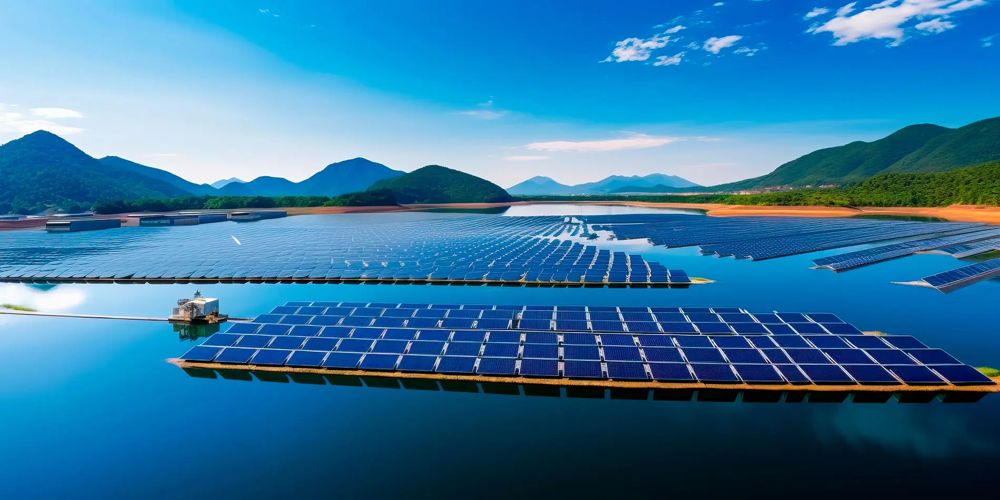

Intro

WindSightAI represents a transformative leap in climate analysis, utilizing advanced AI-driven agents to process, analyze, and provide actionable insights from vast datasets. The platform is designed to break the barriers of traditional environmental modeling by combining computational power with intuitive design. Researchers, policymakers, and industry leaders can now unlock insights faster and with greater precision than ever before.
The AI framework doesn’t just analyze data; it understands it. By leveraging natural language processing, geospatial analytics, and machine learning models, WindSightAI adapts to evolving datasets and user requirements. The platform bridges the gap between raw data and decision-making, ensuring that insights are not just accurate but also actionable in real-world scenarios.
WindSightAI is more than a tool—it is a partner in innovation. From predicting climate impacts to optimizing renewable energy strategies, this framework empowers users to take control of their data and transform it into a sustainable future. With every analysis, WindSightAI redefines what’s possible in the realm of environmental intelligence.
As industries and governments face increasing pressure to address climate change, WindSightAI serves as a catalyst for informed decision-making. Its modular architecture, powered by cutting-edge algorithms, ensures that it can adapt to the unique challenges of different sectors, from energy to urban planning.
AI Agent Framework

The AI Agent Framework is the backbone of WindSightAI, enabling a decentralized and adaptive approach to climate analysis. This modular system deploys specialized agents, each tasked with a specific role, such as data ingestion, predictive modeling, or scenario simulation. These agents work collaboratively to synthesize information and deliver comprehensive analyses.
One of the standout features of the framework is its integration with OpenAI’s GPT models and other large language models (LLMs). These integrations enable agents to process natural language queries, generate detailed reports, and even provide recommendations tailored to specific user needs. For example, users can query the system to “identify the best wind farm locations in Europe based on historical climate data,” and the framework will deliver a detailed, actionable report.
The framework’s multi-agent design allows for unparalleled scalability. By utilizing reinforcement learning, agents continuously improve their decision-making processes. This ensures that the insights provided are not only accurate but also optimized for the complexities of real-world scenarios. Additionally, future iterations will introduce autonomous agents capable of initiating analyses, identifying anomalies, and even suggesting new research directions.
By incorporating emerging technologies like generative AI and geospatial deep learning, WindSightAI’s framework sets a new benchmark for adaptability and precision. Whether it’s analyzing satellite imagery or simulating climate policy impacts, the AI agents operate with a level of intelligence that mimics human expertise but at a scale and speed unattainable by traditional methods.
Research Origins
WindSightAI was born out of a research initiative focused on optimizing wind farm locations through geospatial climate analysis. By combining environmental data with machine learning models, the research demonstrated how intelligent analysis could reduce environmental impact while maximizing energy output. This foundational work highlighted the potential of AI to transform the renewable energy sector.
While the initial research laid the groundwork, WindSightAI has evolved to address a broader array of challenges. Today, it integrates state-of-the-art AI techniques to tackle issues such as urban planning, disaster response, and biodiversity conservation. By maintaining its roots in rigorous academic research, the platform ensures that its methodologies remain scientifically robust and practically relevant.
As WindSightAI moves forward, it continues to honor its research origins by collaborating with academic institutions and research organizations. These partnerships ensure that the platform remains at the cutting edge of environmental intelligence, leveraging the latest advancements in AI and geospatial analytics.
The journey from a research project to a comprehensive AI framework demonstrates the power of innovation and collaboration. WindSightAI stands as a testament to what’s possible when technology and research converge to address global challenges.
Key Features

WindSightAI boasts a suite of features designed to empower users across various sectors. These features are not just tools—they are enablers of innovation and efficiency, transforming how data is understood and applied.
- Autonomous Analysis: AI agents independently perform tasks such as climate modeling, resource allocation, and policy impact simulations. This autonomy reduces human workload and increases analysis speed.
- Scalability: From localized studies to global-scale analyses, the platform adapts seamlessly to projects of any scope. Its modular design ensures that new features and datasets can be integrated effortlessly.
- OpenAI Integration: With built-in OpenAI GPT models, users can query the system in natural language, generating detailed insights and predictive analyses. Future integrations will include multimodal LLMs for even richer data interpretation.
- Advanced Visualization: Generate heatmaps, 3D models, and dynamic dashboards to communicate insights effectively. These visualizations bridge the gap between complex data and actionable understanding.
- Real-Time Insights: Equipped with cutting-edge algorithms, the platform provides rapid analyses, ideal for time-sensitive scenarios such as disaster response or policy negotiations.
- Multi-Sector Applications: WindSightAI is not limited to energy optimization. It supports disaster mitigation, agricultural planning, biodiversity conservation, and beyond, making it a versatile tool for any environmental challenge.
Future updates aim to incorporate federated learning for distributed datasets, enhancing data privacy and collaborative analytics. WindSightAI’s vision is to evolve into a platform where AI not only processes data but also anticipates challenges and suggests proactive solutions.
The platform’s robust security architecture ensures that all data remains encrypted and compliant with international standards. This focus on security makes WindSightAI a trusted partner for sensitive projects in government and industry alike.
By combining cutting-edge AI with user-centric design, WindSightAI ensures that every feature contributes to actionable, impactful outcomes. It’s not just a tool—it’s a revolution in climate intelligence.
Challenge & Solution

Climate change poses one of the most significant challenges of our time, requiring innovative solutions to manage its impacts and mitigate its effects. Traditional methods of environmental analysis are often slow, resource-intensive, and limited in scope. The complexity of climate systems demands tools that can process vast datasets and provide actionable insights in real time.
WindSightAI addresses these challenges with its AI-driven framework, which automates complex analyses while maintaining scientific rigor. By integrating advanced machine learning, geospatial analytics, and natural language processing, the platform transforms raw data into meaningful insights. This enables stakeholders to make informed decisions faster and with greater confidence.
Through its modular architecture, WindSightAI adapts to the unique challenges of each project. Whether it’s simulating climate policy impacts or optimizing renewable energy strategies, the platform provides the tools needed to tackle any environmental challenge. Its ability to handle multi-modal datasets ensures that no information is overlooked, offering a holistic view of the problem at hand.
As WindSightAI evolves, it aims to not only solve current challenges but also anticipate future ones. By incorporating predictive modeling and autonomous decision-making capabilities, the platform is set to redefine what’s possible in environmental intelligence.
Socials